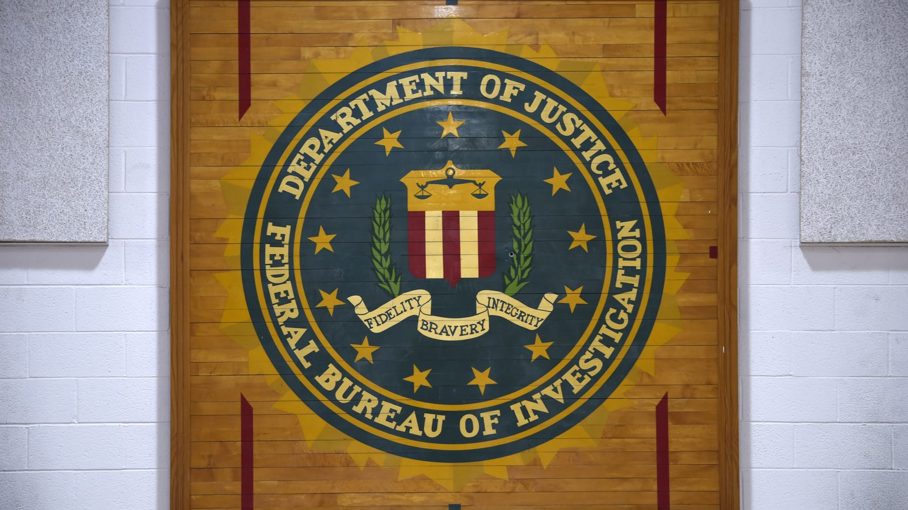

FBI hacked by ShinyHunters

The extortion group known as ShinyHunters says it broke into FBI systems through the bureau's online jobs portal and took personal data on current and former employees, as well as job applicants. The group claims to hold more than 2 TB of data.
According to reporting from 404 Media and The Washington Post, the group says the records include names, home addresses, phone numbers, details about spouses and some medical information. The group says it got in through a previously unknown (zero-day) flaw in Oracle PeopleSoft, the software behind the jobs site. The site was defaced and then taken offline.
The FBI says it is investigating but has not confirmed how much data was taken. At the time of the first reports, the data had not been leaked publicly.